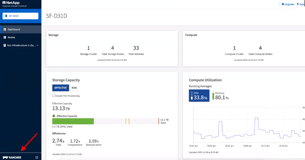
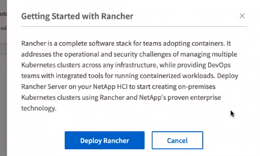
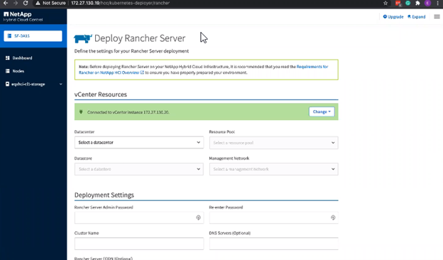
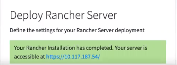

NetApp HCI に Rancher を導入します
NetApp HCI 環境で Rancher を使用するには、最初に NetApp HCI に Rancher を導入します。
| 導入を開始する前に、データストアの空きスペースとその他を確認してください "NetApp HCI の Rancher の要件"。 |
| Rancher サポートは、ネットアップサポートエッジ契約には含まれていません。オプションについては、ネットアップの営業担当者または代理店にお問い合わせください。ネットアップから Rancher サポートを購入された場合は、手順が記載された E メールをお送りします。 |
NetApp HCI に Rancher を導入するとどうなりますか。
の導入では、以下の手順を実行します。各手順についてさらに説明します。
-
NetApp Hybrid Cloud Control を使用して導入を開始します。
-
Rancher 展開は、 3 台の仮想マシンを含む管理クラスタを作成します。
各仮想マシンには、コントロールプレーンとワーカーの両方の Kubernetes ロールがすべて割り当てられます。つまり、 rancher UI は各ノードで使用できます。
-
Rancher コントロールプレーン（または rancher Server ）もインストールされます。簡単に導入できるように、 Rancher の NetApp HCI ノードテンプレートを使用します。Rancher コントロールプレーンは、 NetApp HCI インフラの構築に使用した NetApp Deployment Engine の構成と自動的に連携します。
-
導入後、ネットアップから E メールが届きます。この E メールには、 NetApp HCI のランチマ展開に関するネットアップサポートに登録するオプションが記載されています。
-
導入後、開発チームと運用チームは任意の Rancher 環境と同様に、ユーザクラスタを導入できます。
NetApp HCI に Rancher を展開する手順
NetApp Hybrid Cloud Control にアクセスします
導入を開始するには、 NetApp Hybrid Cloud Control にアクセスしてください。
-
Web ブラウザを開き、管理ノードの IP アドレスにアクセスします。例：
https://<ManagementNodeIP>[""]
-
NetApp HCI ストレージクラスタ管理者のクレデンシャルを指定して NetApp Hybrid Cloud Control にログインします。
NetApp Hybrid Cloud Control のインターフェイスが表示されます。
NetApp HCI に Rancher を導入します
-
Hybrid Cloud Control のナビゲーションバーの左下にある * ランチャ * アイコンをクリックします。

ポップアップウィンドウに、 Rancher の使用を開始することを示すメッセージが表示されます。

-
[* ランチの展開 * ] をクリックします。
Rancher UI が表示されます。

vCenter のクレデンシャルは、 NetApp Deployment Engine のインストールに基づいて収集されます。
-
vCenter リソース情報を入力します。次に、一部のフィールドについて説明します。
-
* データセンター * ：データセンターを選択します。データセンターを選択すると、他のフィールドはすべて事前に入力されますが、変更することはできます。
-
* データストア * ： NetApp HCI ストレージノード上のデータストアを選択します。このデータストアは耐障害性が高く、すべての VMware ホストからアクセスできる必要があります。ホストの 1 つにしかアクセスできないローカルデータストアは選択しないでください。
-
* 管理ネットワーク * ：管理ステーションおよびユーザクラスタをホストする仮想マシンネットワークからアクセスできる必要があります。
-
-
導入設定 * 情報を入力：
-
*DNS サーバ *: オプション。ロードバランシングを使用する場合は、内部 DNS サーバの情報を入力します。
-
Rancher Server FQDN: ノード障害時にランチサーバが使用可能な状態を維持するために、 DNS サーバが rancher サーバクラスタのノードに割り当てられた IP アドレスのいずれかに解決できる完全修飾ドメイン名 (FQDN) を指定します。"https" プレフィックスを含むこの FQDN は、ランチツールの実装にアクセスする際に使用するランチツール URL になります。
ドメイン名を指定しない場合は、代わりにワイルドカード DNS が使用され、展開の完了後に提示された URL のいずれかを使用してランチサーバにアクセスできます。
-
-
詳細設定 * 情報を入力：
-
* 静的 IP アドレスの割り当て * ：静的 IP アドレスを有効にする場合は、 3 つの IPv4 アドレスの開始 IP アドレスを順に指定し、各管理クラスタ仮想マシンに 1 つずつ指定します。NetApp HCI の Rancher は、 3 台の管理クラスタ仮想マシンを導入します。
-
* プロキシサーバーの設定 * ：
-
-
Rancher エンドユーザライセンス契約のチェックボックスを確認して選択します。
-
チェックボックスを確認して選択し、 Rancher ソフトウェアに関する情報を確認します。
-
[Deploy （配備） ] をクリックします。
導入の進捗状況はバーに表示されます。
Rancher の導入には約 15 分かかる場合があります。 展開が完了すると、 rancher は完了に関するメッセージを表示し、 rancher URL を提供します。

-
展開の最後に表示される Rancher URL を記録します。この URL を使用して、 Rancher UI にアクセスします。
vCenter Server を使用して導入を確認します
vSphere Client には、 3 台の仮想マシンを含むランチ元管理クラスタが表示されます。
| 導入が完了したら、 Rancher サーバ仮想マシンクラスタの設定を変更したり、仮想マシンを削除したりしないでください。NetApp HCI の Rancher は、展開された RKE 管理クラスタの設定に依存して、正常に機能します。 |
 GitHub で編集
GitHub で編集